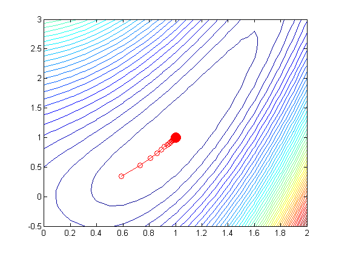

exactLineSearch = false;
f = @(x) aokiFn(x);
[x1 x2] = meshgrid(0:0.1:2, -0.5:0.1:3);
Z = f([x1(:), x2(:)]);
Z = reshape(Z, size(x1));
figure(1);clf
contour(x1,x2,Z,50)
hold on
h=plot(1,1,'ro'); set(h,'markersize',12,'markerfacecolor','r');
x0 = [0; 0];
global xhist fhist funcounthist
xhist = [];
if 1
x = coordDescent(f, x0, 'maxIter', 100, 'outputFn', @optimstore);
else
stepSize = 0.1;
x = coordDescent(fn, x0, 'maxIter', 20, ...
'stepSize', stepSize, 'outputFn', @optimstore);
end
hold on;
plot(xhist(1,:), xhist(2,:), 'ro-');
